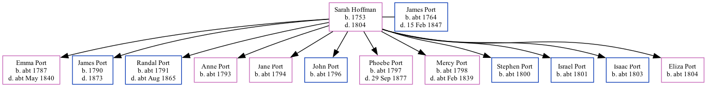

Public Member Trees Online publication - Provo, UT, USA: The Generations Network, Inc., 2006.Original data - Family trees submitted by Ancestry members.Original data: Family trees submitted by Ancestry members.
Family Tree

Interactive Map
Map
Generated by ged2site. Last updated on Feb 18, 2025